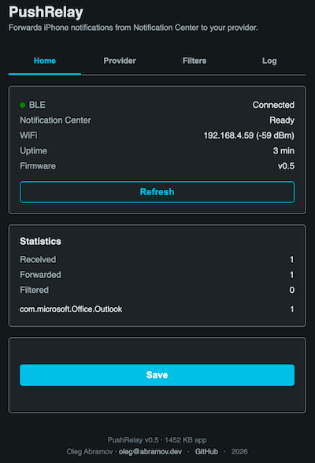
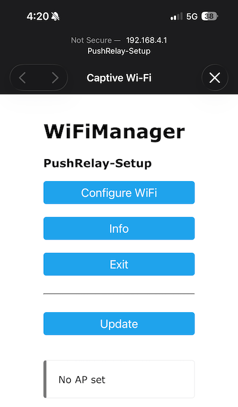
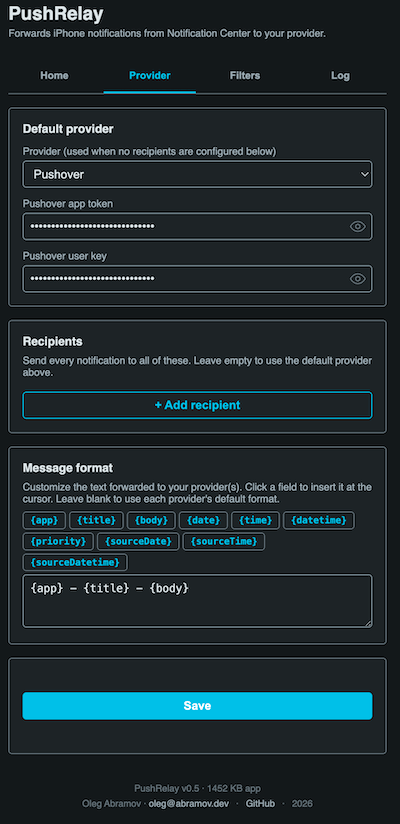
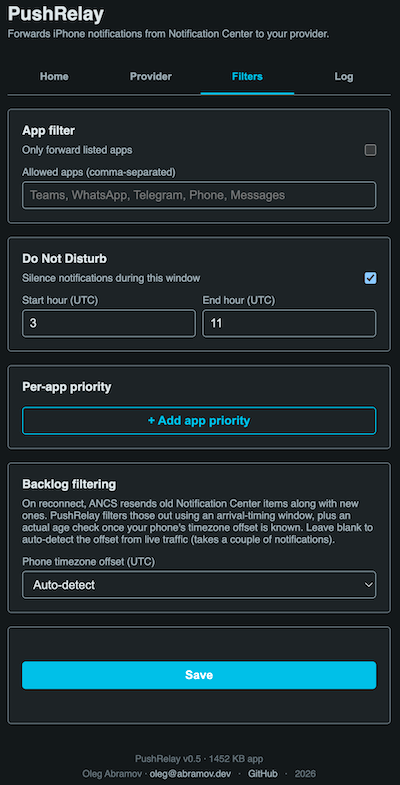
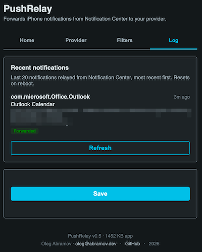

Firmware for a cheap ESP32 that bridges your iPhone's Notification Center to your own push service — Bark, Pushover, or MQTT. Flashed straight from this page, no tools to install.
Desktop Chrome or Edge · ESP32 with 8 MB flash · one USB cable for the first flash

PushRelay turns a cheap ESP32 board into a bridge for iPhone notifications. It pairs with your iPhone over Bluetooth the same way a smartwatch does, subscribes to Apple's Notification Center (the ANCS protocol), and forwards every notification — app name, title, body — over WiFi to a delivery service you choose.
Free iOS push app. Paste its device key and notifications land on your phone.
Cross-platform push service. Use an application token plus your user key.
Publish JSON to your own broker for home-automation use. Host, port, topic, optional TLS.
It also runs a small web admin UI for configuration, with an app allow-list, a Do Not Disturb schedule, per-app priority, multiple recipients, a custom message format, and a recent-notifications log. After the first USB flash, all further updates happen over WiFi (OTA) — no cable needed again.
Nothing to install on your computer. Use desktop Chrome or Edge — Web Serial isn't available in Firefox, Safari, or on mobile.
CP2102 /
USB Serial, or COMx on Windows).A brand-new, never-flashed ESP32 is fine — the chip's built-in ROM bootloader handles the first flash. If no port appears, install the CP210x USB-UART driver (rarely needed on current Windows/macOS/Linux). Close any other serial monitor (PlatformIO, Arduino IDE) first.
Three short steps after flashing: get it on WiFi, pair your iPhone, pick a provider.
Right after flashing, still on this page, the installer offers a WiFi setup
step over the USB cable: pick your network, enter the password, and when the ESP32 connects
the page shows a clickable Visit device link straight to its IP address
(http://192.168.x.x). That address is the admin UI — bookmark it.
The ESP32 falls back to a captive portal. On your phone or laptop, join the
PushRelay-Setup WiFi network; a setup page opens automatically (or browse to
192.168.4.1). Tap Configure WiFi, choose your network, enter the
password. The device saves it and reboots onto your network.

PushRelay-Setup captive portal — tap Configure WiFi.EN/RST
button, and watch for WiFi connected: 192.168.…. It's also on the admin UI's
Home tab, and the device answers at http://pushrelay.local on most networks.
Open the admin UI (the Visit device link, its IP, or
http://pushrelay.local), go to the Provider tab, pick Bark,
Pushover, or MQTT, paste the credentials, and press Save.

A single-page web app served by the device. Hover a shot to see it in colour.


No cable needed after the first flash. From the admin UI or your build tools, push new firmware
over WiFi (OTA), protected by the OTA_PASSWORD you set at build time. Reflashing does
not erase your WiFi credentials, provider keys, or the iPhone bond.
Some iOS versions don't show generic BLE accessories under Settings → Bluetooth.
Use a free BLE scanner app (e.g. LightBlue) to connect to PushRelay
once — that triggers the same system pairing dialog. It's a one-time step; afterwards the
device reconnects on its own.
Almost always a plain ("Just Works") pairing instead of an authenticated one. Forget the device in iOS Bluetooth settings and pair again, accepting the passkey confirmation.
Install the CP210x USB-UART driver, try a different USB cable (some are power-only), and close any other serial monitor (PlatformIO, Arduino IDE) that might be holding the port.
Try http://pushrelay.local, check your router's client list, or connect over
USB and use Logs & Console on this page while pressing the board's
EN/RST button to watch for WiFi connected: 192.168.….